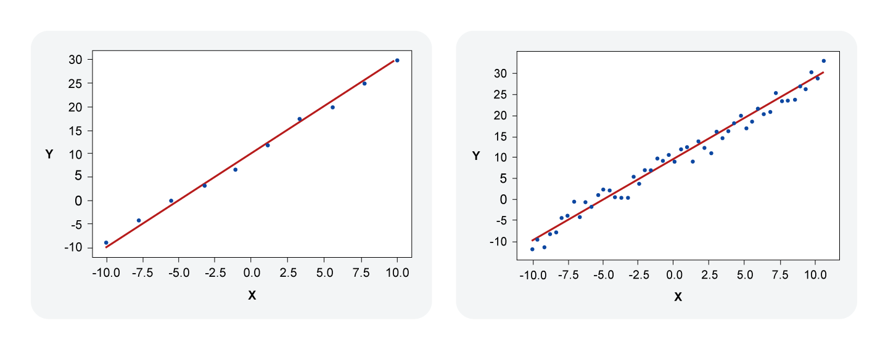
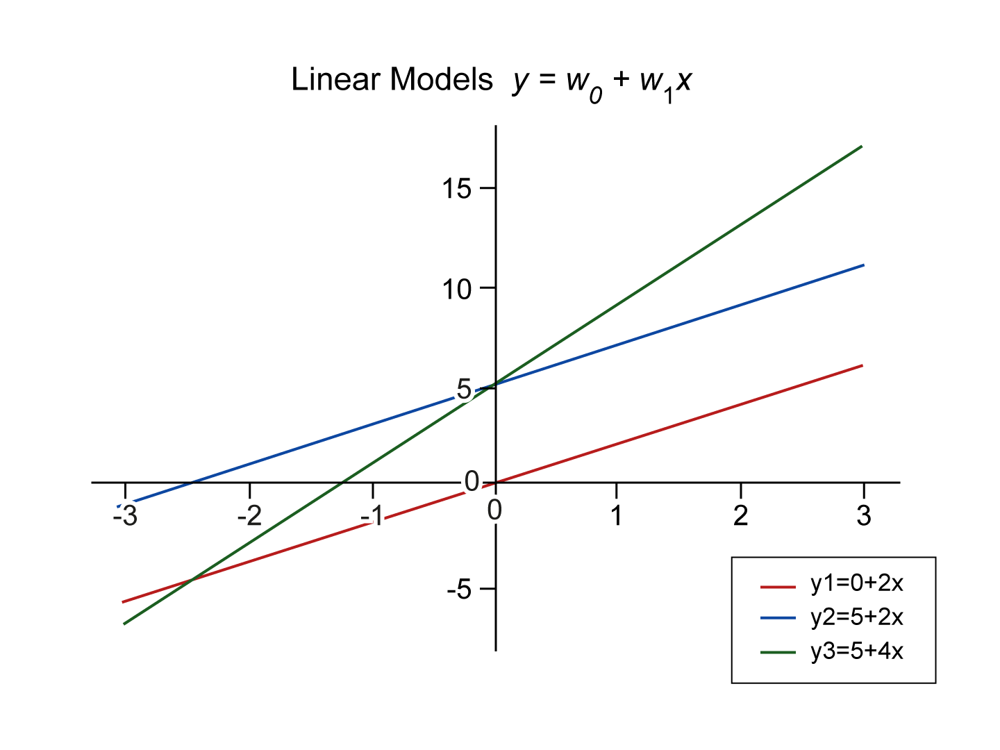
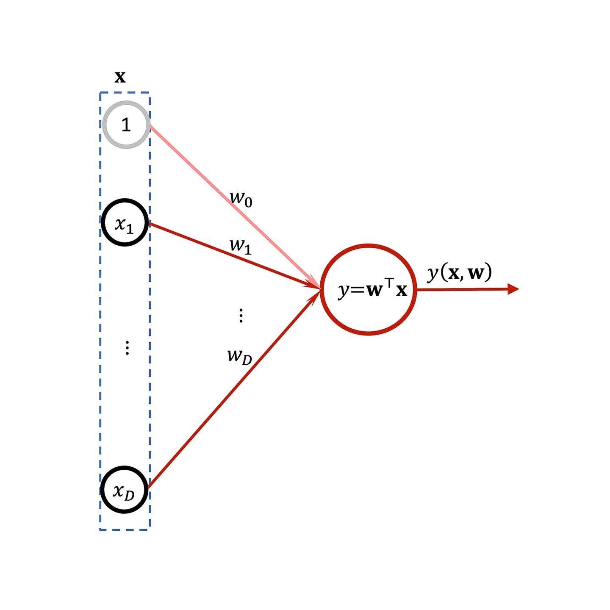

Example of linear regression model
In its simplest form, linear models attempt to draw a straight line that fits a set of data point. Given the following dataset (scroll to the right within the table to see all data):
| x | -10 | -7.8 | -5.6 | -3.3 | -1.1 | 1.1 | 3.3 | 5.6 | 7.8 | 10 |
|---|---|---|---|---|---|---|---|---|---|---|
| y | -8.9 | -4.2 | 0 | 3.1 | 6.6 | 11.9 | 17.3 | 19.8 | 24.8 | 29.8 |
We can fit a linear model that we show below on the left. On the right we show another larger dataset with its fitted model.

Important note
We denote matrices by a bold face capital letter, vectors by a bold face letter and variables by a normal face letter and components of a vector will be italic. So for example:
-
\(\mathrm{x}_{n}\) is a real value that corresponds to data point n in one dimension space.
-
while \(\mathbf{X}_{n}\) is a vector of multiple components that corresponds to data point \(n\) in D-dimensional space.
-
\(t_{n}\) is a real value corresponds to a target \(n\) in one dimensional space.
-
\(\boldsymbol{t}_{n}\) is a real value vector that corresponds to a multi-output target n in \(K\)-dimensional space.
-
\(x_{i}\left(\right.\) and \(\left.x_{n, i}\right)\) is components \(i\) of some vector \(\mathbf{x}\left(\right.\) or \(\left.\mathbf{x}_{n}\right)\) depending on the context.
-
while \(\mathbf{w}\) is a weight vector of \(D\) (or \(M)\) components; in other words it is a vector of \(D\) rows and 1 column.
-
\(\mathbf{W}\) is a weight matrix of \(D \times K(\) or \(M \times K)\) components. In other words it has \(D\) rows and \(K\) columns.
Inference in Linear Regression Models
The idea is that later on when we want to know the \(y\) of a given \(x\) we can extrapolate or interpolate. So if we assume that the previous linear regression model has the formula \(y=2x+10\) then given that \(x=2\) then we can immediately infer from our model that \(y=2 \times 2+10=14\). Similarly, given any regression model we can ask the model to predict for us a value \(y\) given an input \(x\). In the next sections we will see how we can actually build or train such linear regression models. We start by formulating the regression problem in a proper mathematical framework and we will see how we can train a linear regression model via a set of algorithms.
Problem Formulation
We assume that we have a training dataset that consists of:
-
N observations \(\left\{\mathbf{x}_{n}\right\}\), where \(n=1,…,N\)
-
A set of corresponding target values \(\left\{\mathbf{t}_{n}\right\}\)
We call \(\mathbf{x}_{n}\) a data point, a vector of observations, a record or a case, interchangeably. Similarly, we call \(t_{n}\) the label, the target value or the answer, interchangeably.
Note
That $\mathbf{x}_{n}$ is a vector of D real values. We assume that $t_{n}$ is a real value scalar. Also, note that in the general case $\mathbf{t}_{n}$ can be a vector of size $K$, we will come to that later.
Important note
All the techniques of partitioning the dataset into training, validation and testing sets, with cross validation sets if necessary, that we have discussed in Unit 2 apply to all the techniques that we discuss in this unit. From now on any reference to a dataset in a training context assumes that we are talking about a training set.
The Aim of Constructing a Model
Given a new unseen observation \(x\), the goal is to train a model to predict the target value \(y(x)\) for the given observation \(x\) so that \(y(x)\) resemble or come as close as possible to the ‘would be’ real target value \(t\). During training, both \(y(x_{n})\) and \(t_{n}\) are available and their difference drives the learning journey of the model. After training, when the model is used in real settings, we do not know the target value \(t\). The whole point of constructing the model is to predict such a value. So the generalisation and prediction capabilities of our model have to be specified from the available answers \(t_{n}\).
Linear Regression as a Parametric Model
One of the simple types of parametric models is the linear regression model which is the topic of this lesson. It belongs to a wider group of models called parametric models. Parametric models have one important thing in common, which is that they all use a set of adjustable parameters (aka weights) which the model learning algorithm tweaks in order to reduce the loss function and make the model prediction as close to the desired target values as possible. Throughout this unit we denote the adjustable parameters or weights as \(\mathbf{w}\). In the next section we will see how the linear regression model can be expressed in terms of its weights.
Why we call it linear
Before we start discussing the different forms of linear regression models. We need to be clear about the word linear. When we say linear we mean in terms of the weights and not necessarily in terms of features. This will be clear when we go through the different types of linear models for regression.
Ok, let us start with the simplest linear regression model.
This is the simplest type of linear model. It defines a relationship between \(y\) and \(x_1\) as a straight line. If you remember from high school that we define a straight line as \(y=c+mx\) you can immediately realise that \(w_0\) is the intercept of the straight line on the \(y\) axis (corresponding to \(c\)) and \(w_1\) are just the slope of the straight line (corresponding to \(m\)).

Figure 4.3. Shows three different linear models with one variable \(x\), each has its bias \(w_{0}\) and slope \(w_{1}\). Note that the red and blue has the same slope, while the green and the blue has the same bias.
Linear Regression for Multi-dimensional Input Space
We can generalise the idea of a linear model from \(D=1\) dimensional space into \(D≥1\) space input. We only need to take into account that we have more than 2 coefficients and these coefficients are called the weights in general, \(w_0\) is still called the bias. Let us assume that we have a \(D\) input space like a set of numerical features of some entity like a house or a car etc. Each input \(\mathbf{x}\) will be a vector and will take the form:
\(\mathbf{x}=\left[\begin{array}{c}x_{1} \\ x_{2} \\ \vdots \\ x_{D}\end{array}\right]\)
Which also can be written as \(\mathbf{x}=\left[x_{1}, x_{2}, \ldots, x_{D}\right]^{\top}\), where ⊤ denotes the transpose of a matrix or a vector. Linear regression models perform the prediction of the input vector \(\mathbf{x}\) by multiplying each component of the observation \(x_i\) by a weight \(w_i\) as follows:
where \(\sum_{i=1}^{D} w_{i} x_i\) is a simple multiplication of each \(x_i\) with \(w_i\) and summing all the multiplications. Learning takes place by adjusting these parameters to make the model produce the desired answers. In simple terms, linear means first order sum.
Vector Matrix Representation with Dummy Component
It is often convenient to express machine learning tasks such as linear regression in terms of vectors and matrices. This is due to two main reasons. The first, we can apply linear algebra concepts and methods which is widely studied and available in all branches of science. Second, vectorised forms are often far more efficient to implement on a computer using scientific computing languages and packages (including Python numpy, MATLAB and FORTRAN) instead of using loops. So, in any implementation task that you do in machine learning you should strive to make your solution depends on vectors and matrices instead of loops whenever possible. The process of changing from loops to vectors and matrices operations is called vectorisation.
Looking at the above linear model expressions, we can easily identify that they can be changed into:
However, it is also more useful if we express the whole model using vectors. To do so, we can define a dummy feature \(x_0=1\) for all vectors of the input space. In this case we can define our linear model as:
Where \(\mathbf{w}^{\top}=\left[w_{0}, w_{1}, w_{2}, \ldots, w_{D}\right]\) and our extended input space vector \(\mathbf{x}^{\top}=\left[x_{0}, x_{1}, x_{2}, \ldots, x_{D}\right]\) and \(x_0=1\).
So, we added the dummy feature \(x_0\) to the input space. The operation \(\mathbf{w}^{\top} \mathbf{x}\) gives us one value because \(\mathbf{w}\) is a vector, later we will adjust this to get multi-output via \(\mathbf{W}^{\top} \mathbf{x}\) where \(\mathbf{W}\) is a matrix not a vector. Below we show a schematic representation of a linear regression model.

Vectorised Representation for the Entire Dataset
We can go further and vectorise the entirety of a dataset to obtain all the predictions at once via one operation:
First, we define:
and
Where we call \(\mathbf{X}\) the design matrix, it has dimension of \(N \times D\) and its \(\mathrm{n}^{\text {th }}\) row is \(\mathbf{x}_{n}^{\top}\), while we call \(\mathbf{t}\) the targets matrix. The design matrix visually resembles data in a table, and so it makes the implementation of the formula more convenient. Let us now re-formalise the problem using \(\mathbf{X}\) and \(\mathbf{t}\). The prediction of the linear model on the entirety of the dataset can be written as:
Where \(y\) is a vector that comprises all the predications for all data points \(\mathbf{x}_{n}\).
If we want to take the difference between each target and model prediction for the target, then we can simply do:
This operation will produce a vector of size \(N\) each component of it is \(t_{n}-\mathbf{w}^{\top} \mathbf{x}_{n}\).
Watch the following video on the concepts of regression.
Download the following powerpoint slides used in the video for a summary of what we cover in this unit.